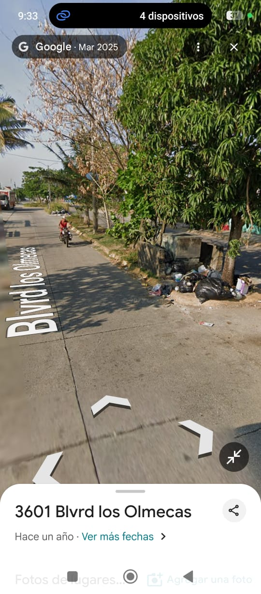
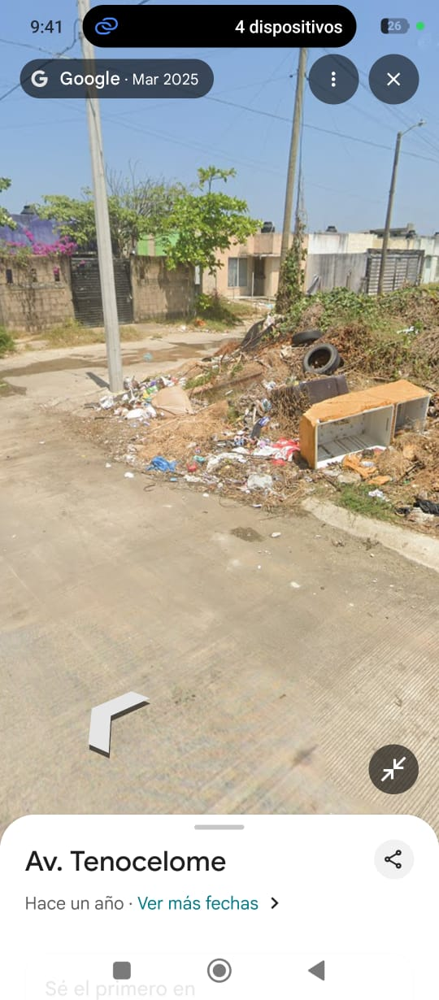
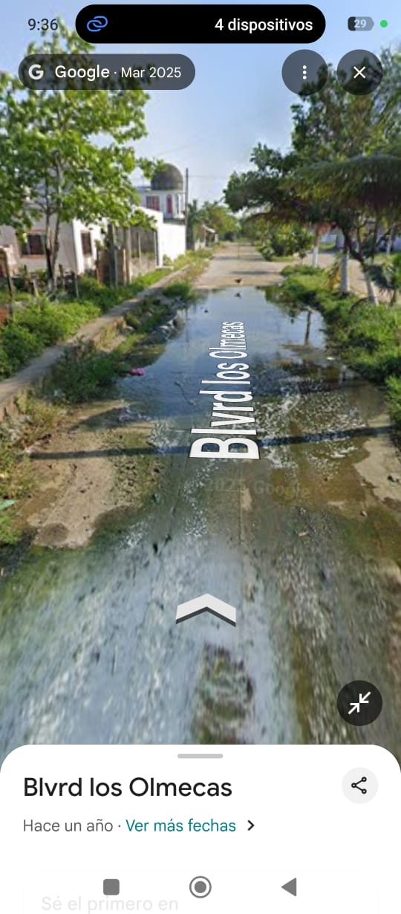

Misión
Informar y sensibilizar a los habitantes de Olmeca/Dunas sobre el manejo responsable de los residuos y el cuidado de los drenajes.
Información educativa sobre la basura y los drenajes en Olmeca/Dunas, Coatzacoalcos, Veracruz. Proyecto escolar.

Noticia Ecológica Olmeca/Dunas es un portal escolar que reúne información educativa para entender cómo la basura y el mal funcionamiento de los drenajes afectan a la comunidad, y qué podemos hacer al respecto.
Informar y sensibilizar a los habitantes de Olmeca/Dunas sobre el manejo responsable de los residuos y el cuidado de los drenajes.
Una comunidad que cuida su entorno, participa activamente y mantiene calles y drenajes limpios.
Promover la conciencia ambiental y la participación ciudadana frente a la problemática de la basura y los drenajes.
Nota aclaratoria: Los artículos presentados a continuación son textos educativos creados con el fin de proporcionar contenido de apoyo e ilustrativo para este proyecto, no representan noticias reales ni estadísticas oficiales..
 🌫️
🌫️Los residuos mal desechados liberan sustancias que se filtran al suelo y llegan a ríos y arroyos.
 🗑️
🗑️La falta de contenedores, horarios de recolección poco claros y malos hábitos generan montones de residuos.
 🚰
🚰Plásticos, envolturas y grasa reducen el paso del agua y favorecen las obstrucciones.
 🌧️
🌧️Con un drenaje obstruido el agua se estanca, lo que puede atraer mosquitos y malos olores.
 ♻️
♻️Una guía sencilla para disminuir la basura que generamos en casa y en la escuela.
 📚
📚Orgánicos, reciclables y no reciclables: una clasificación básica que cualquier familia puede aplicar.
No hay noticias en esta categoría.
En zonas urbanas como Olmeca y Dunas, la basura que llega a calles y drenajes puede bloquear el paso del agua, sobre todo en temporada de lluvias. reemplázalo con datos y observaciones propias verificadas.



Jornadas vecinales periódicas en calles, parques y escuelas.
Contenedores diferenciados y hábitos de clasificación en casa.
Limpieza preventiva antes de la temporada de lluvias y reporte a las autoridades.
Comités de vecinos que vigilen y propongan mejoras.
Talleres y pláticas en escuelas y espacios comunitarios.
La basura y los problemas de drenaje afectan el ambiente, la salud de las personas y la economía de la comunidad.
La acumulación de residuos puede contaminar el suelo y el agua. Los plásticos y otros desechos pueden llegar a los drenajes y dificultar el paso del agua.
La basura acumulada puede generar malos olores, favorecer la presencia de fauna nociva y afectar la calidad de vida de los habitantes.
La acumulación de residuos puede incrementar los gastos de limpieza y mantenimiento. Separar y reciclar permite aprovechar materiales y reducir desperdicios.
Promedio diario de residuos sólidos urbanos recolectados en México durante 2024.
Promedio diario de residuos sólidos urbanos recolectados en México durante 2022.
Las cifras corresponden a México en general y no representan mediciones específicas de Olmeca y dunas.
Responde las siguientes preguntas para comprobar cuánto aprendiste sobre la basura y los drenajes.
Selecciona las acciones que te comprometes a realizar para contribuir al cuidado de nuestra comunidad.
Comparte una propuesta o una observación. Aquí se guarda solo como demostración, no se envía a ningún servidor.